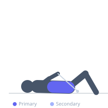
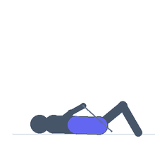

Exercise guide / High Cable Rope Crunch
High Cable Rope Crunch
The high cable rope crunch uses a rope attachment on a high pulley to provide constant tension throughout the entire range of spinal flexion, unlike bodyweight crunches where tension drops as the crunch deepens. The athlete kneels facing the cable stack, holds the rope behind the head, and flexes the spine downward to bring the elbows toward the knees. This constant-tension loading makes it one of the most effective loaded abdominal exercises and allows progressive overload of the rectus abdominis in a way that bodyweight crunches cannot replicate.
Primary muscles
rectus abdominis
Secondary muscles
internal oblique
external oblique
transverse abdominis
Stabilizers
iliacus
Equipment
Cable Machine (High Pulley)


Starting position
- Attach a rope to the high pulley. Kneel facing the cable machine, approximately 60–80 cm from the base of the stack. Hold the rope with both hands, thumbs pointed inward, and position the rope on either side of the head. The hips remain fixed throughout.
Setup
- Set the cable height to the high pulley. Attach a rope handle. Kneel on a mat for comfort. Choose a weight that allows full range of motion with controlled eccentric.
Steps
- Step 1: Kneel facing the cable machine with rope held at the sides of the head. Hips remain stationary throughout — do not sit back.
- Step 2: Flex the spine forward and downward, bringing the elbows toward the floor in front of the knees. Focus on rounding the spine, not simply hinging at the hips.
- Step 3: Hold the contracted position for 1–2 seconds, feeling the maximal contraction of the rectus abdominis.
- Step 4: Slowly return to the starting position, allowing a full stretch of the abs at the top. Do not allow the spine to hyperextend.
- Step 5: Repeat for the prescribed number of repetitions.
Coaching cues
- Round the spine — do not hinge at the hips
- Imagine trying to bring your sternum to your pelvis
- The hips do not move
Breathing
- Exhale forcefully at the bottom of the crunch (fully contracted position). Inhale on the controlled return to the start.
Range of motion
- Full spinal flexion from an extended position at the top to maximum forward flex at the bottom. Elbows should travel toward the floor.
Tempo
- 2-1-2-0 (2 seconds down, 1 second hold, 2 seconds up). Do not rush the eccentric.
Common mistakes
- Hinging at the hips and sitting back rather than flexing the spine — this uses the hip flexors, not the abs
- Using momentum by swinging forward rather than contracting the abs deliberately
- Not allowing a full stretch at the top of the movement, limiting the range of motion
Safety
- Avoid neck strain by keeping the rope at the sides of the head, not behind it — the hands should not pull the head forward
Training
- hypertrophy: 10–20 reps
- endurance: 15–25 reps
- hypertrophy: 3–4 sets
- Rest: {'hypertrophy': 60, 'endurance': 45}